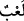

“Bir eğlence” yâni kendinizi onunla oyalıyor ve sizin için önemli olan âhiret
işlerinden uzaklaşıyorsunuz.
“Bir süs,” giysilerden, binitlerden ve güzel konaklardan ibâret olup, sizler kendinizi
onlarla süslüyorsunuz.
“Aranızda bir övünme” Nesepler ve haseplerle iftihar ediyor, büyükleniyorsunuz.
Fahr, mal ve mevki gibi insanın dışında olan bir şey ile iftihar etmesine denir.
Müfredât’ta da geçtiği gibi, çok güzel olan her şey fahr/övünme ile ifâde edilir.
“Ve daha çok mal ve evlad sâhibi olma isteğinden ibârettir.” Yâni sayıyla
övünüyorsunuz. Sayı ise mal ve evlad çokluğuyla gurur/övünme demektir. Bilhassa
onlarla Allah dostlarına karşı küstahlık etmek mânâsındadır.
Bilin ki az bir zaman sonra bu oyun ve eğlence bertaraf olur. Eğlence ve sevinç yerini
gam ve kedere bırakır. Güzellikleri kaybolur, mal ve evlad çokluğuyla övünüp
böbürlenmeleri bir ateşin kıvılcımları gibi yok olur gider.
Denilmiştir ki: Çocukların oynadıkları gibi bir oyun, kadınların süsü gibi bir süs,
arkadaşların birbirine karşı övündükleri gibi bir övünme, câhil köy ağalarının yaptıkları
gibi daha çok mal sâhibi olmakla üstünlük taslamaktır.
Hz. Ali (r.a.) Ammâr’a (r.a.) şöyle dedi: Dünya için üzülme, çünkü dünya altı
maddeden ibarettir. Yenilen, içilen, giyilen, koklanan, binilen ve nikâhlanılan şeylerdir.
Yenilen şeylerin en önemlisi baldır, o da sinek cinsinden bir hayvancağızın (arının)
ağzından çıkardığı tükürüktür. İçeceklerin en önemlisi sudur, ona ihtiyacı bulunmakta
bütün canlılar eşittir. En değerli giysi ipektir, o da bir tırtılın dokuduğu maddeden
ibarettir. En önemli koklanan maddesi de misktir. O da bir geyiğin kanından ibarettir. En
önemli binit attır, onun üzerinde adamlar öldürülür. En önemli nikâhlanılan ise kadındır.
O da idrarın aktığı yere akıtmaktan ibârettir.
Hadîs-i şerîfte Peygamber Efendimiz (s.a.) şöyle buyurmuştur: “Dünya ile benim
durumum nedir, benim dünya ile ilgim bir yolcunun durumuna benzer; o yolcu sıcak
bir günde bir ağacın gölgesinde durup gölgelenir, sonra o gölgeyi bırakıp yoluna
devam eder.”[266]
Ey oğul hiçbir mülk ebedî kalmaz dünyada
Ve hiçbir vefâkârlık bulunmaz onda
“Tıpkı bir yağmur gibidir ki,” Buradaki kâf mahalden mensup olup
kelimesindeki
zamirin hâlidir. Çünkü onda sıfat mânâsı vardır. Yâni, dünya yağmura benzediği halde
onun bu sıfatları vardır. Yahut hazf edilen mübtedânın haberidir. Yâni, (dünya) yağmura
benzer. Yahut da haberden sonra gelen hayâtü’d-dünyâ/dünyâ hayatı ifâdesinin
haberidir.
Gays, ihtiyaç duyulan yağmurdur. Sular çekilip azaldığı zaman, kıtlık ve kuraklıktan
kurtulmak için insanlar bu yağmuru beklerler. Gays yalnız faydalı yağmurlar için
kullanılır. Matar kelimesi de yağmur mânâsına gelir ama bütün yağmur türleri için genel